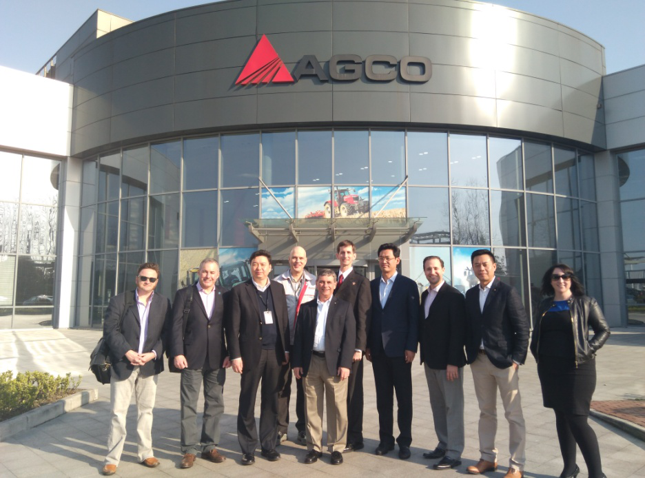

中美反恐论坛
自从2014年，美中新视角基金会连续四年在北京杉园举办了中美反恐国际高层论坛。论坛由美中新视角基金会，美国全球接触研究所，以及北京普世社会科学研究所共同召集。论坛的主要参与者是中美双方退役高级将领和反恐专家及学者。反恐是中美合作的一个新领域。美中新视角基金会的反恐论坛因其高规格、高质量而成为中美反恐人士关注的一个重要会议。

中日学者对话
2017年2月26日，美中新视角基金会和日本笹川日中友好基金在北京杉园联合举办中日学者对话活动。会议的主题是朝鲜半岛的核问题。会议邀请了日本国际问题研究所研究员饭村友纪、山崎周以及关西大学教授平岩俊司、霞山会研究员堀田幸裕与中联部原副部长于洪君、中共中央党校国际战略研究院教授张琏瑰、左凤荣等中国资深学者进行了关于朝核问题的深入探讨。

北京跨国公司研讨会
2017年12月7日，“北京CBD跨国公司政府事务高层论坛”在京圆满闭幕。此次论坛，由北京CBD跨国公司政府事务俱乐部与北京智享荟咨询有限责任公司(Z-share Consulting, http://z-share.net/)共同筹划组织，商务部外资司、北京市商务委总部经济处、北京CBD管委会等单位领导莅临论坛。美中新视角基金会创始人、总裁周志兴主持论坛，嘉宾们围绕“全面开放新格局下投资中国的机遇与优势”的主题开展深度对话交流，在中国吸引外资新机遇、中国全面开放新格局下的经济增量、提高投资服务质量等方面取得了很多共识，收到了良好效果。
旋风九日系列访美活动
2016年11月10日至22日，美中新视角基金会策划并组织了反映邓小平1979年访美全程记录的影片《旋风九日》在美国的放映活动。基金会创始人周志兴和《旋风九日》导演傅红星作为代表团领队和主要发言人，到亚特兰大、波士顿、纽约、华盛顿、洛杉矶及圣地亚哥六个城市，举行了七场放映研讨会，并邀请到美国首位亚裔女大使张之香，卡特政府时期的国家安全顾问、参与了邓小平访美的布热津斯基和中国驻美国大使崔天凯等重量级嘉宾参加研讨。 11月16日，纪录片《旋风九日》在华盛顿子午线中心展映。中国驻美国大使崔天凯、美前国家安全事务助理布热津斯基应邀出席活动并致辞。美国会众议员里克•拉森、美中教育基金会主席张之香大使、子午线中心总裁霍利戴大使及各界人士近百人参加了展映活动。

市长代表团
2017年3月11-17日，基金会与美国泰倡议 （Tai Initiative）联合举办美国市长代表团访华活动，代表团由美国密歇根州威斯特兰市和俄亥俄州加哈纳市的市长及专业机构人士组成，访问了上海、常州、深圳三城，活动极大促进中美市级政府官员之间的交流和相互了解，帮助双方城市获知各自的经济合作机会和潜力。
泰倡议是一家位于美国西雅图的从事中美交流的非盈利机构。其主要工作重点是促进中美次国家层面的交流。
卡特中心论文征集活动
由卡特中心、《环球时报》、以及美国埃默里大学全球战略与项目办公室联合举办的第四届中美青年学者论坛会议于2018年1月30日在美国亚特兰大举行。中美青年学者论坛于2014年由卡特中心和环球时报携手建立，是为两国青年学者相互交流、沟通和研究课题所提供的平台。
来自中美十多个年轻学者在论坛上分享了他们的研究成果。南京大学国际关系学院朱峰，威尔逊中心基辛格中美关系研究所所长戴博、德州大学奥斯汀分校中国政策研究中心主任方大为等中美顶级专家对年轻学者的论坛进行了评判分析。
美中新视角基金会主席周志兴和《环球时报》主编胡锡进进行了专场演讲，从左右两派对中美关系存在的一些问题进行了分析。
美中新视角基金会作为此次论坛的协办单位，出版了《民族主义和国家认同对中美关系的影响》的论文集。